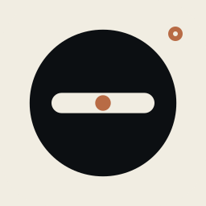
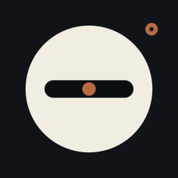
Brass Orb
orb · orb-brass
Motion · GIF 96×96 · 6 frames · 5,520 bytes
breathe + orbit + blink. Static frame is the fallback; open only if motion is welcome.
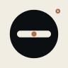
Second pass for the founder review. v1 is preserved unchanged below. v2 keeps the same deterministic identity contract and adds four silhouette families with three genuinely different bodies each: orb, visor, organic, sentinel. All geometry and animation frames are pure Soil; rasterization uses the existing rsvg-convert, GIF encoding uses the installed Pillow.
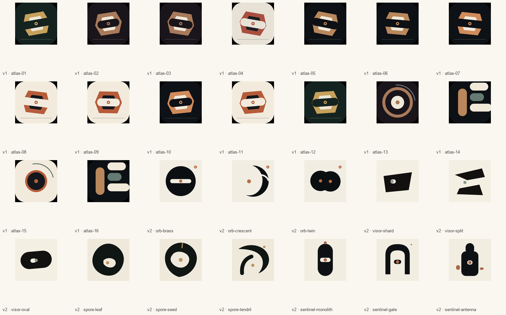
prefers-reduced-motion hides the GIF. No profile was changed.

orb · orb-brass
breathe + orbit + blink. Static frame is the fallback; open only if motion is welcome.

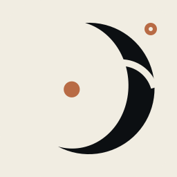
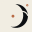
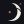
orb · orb-crescent
breathe + orbit. Static frame is the fallback; open only if motion is welcome.
orb · orb-twin
blink + orbit. Static frame is the fallback; open only if motion is welcome.
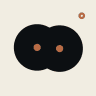
visor · visor-shard
breathe + blink. Static frame is the fallback; open only if motion is welcome.
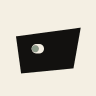
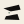
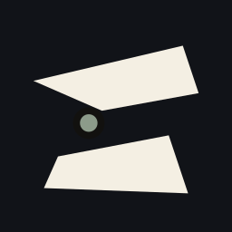
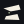
visor · visor-split
blink + breathe. Static frame is the fallback; open only if motion is welcome.
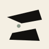
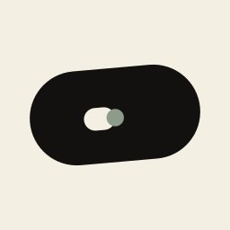
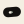
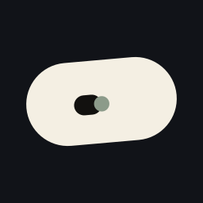
visor · visor-oval
blink + breathe. Static frame is the fallback; open only if motion is welcome.
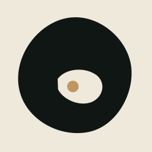
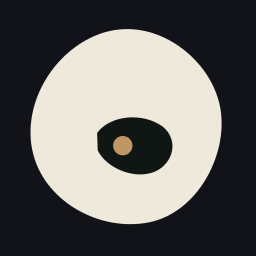
organic · spore-leaf
breathe + blink. Static frame is the fallback; open only if motion is welcome.
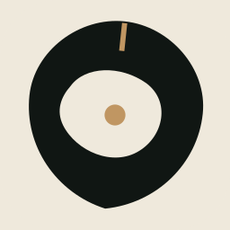
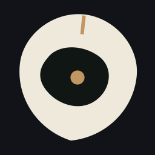
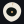
organic · spore-seed
breathe + blink. Static frame is the fallback; open only if motion is welcome.
organic · spore-tendril
morph + blink. Static frame is the fallback; open only if motion is welcome.
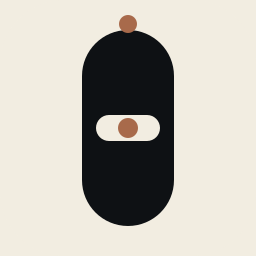
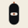
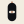
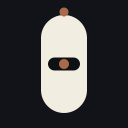
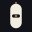
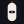
sentinel · sentinel-monolith
pulse + blink. Static frame is the fallback; open only if motion is welcome.
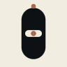
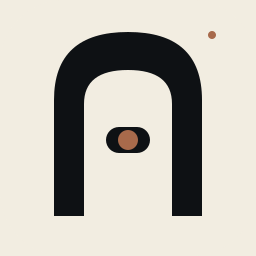
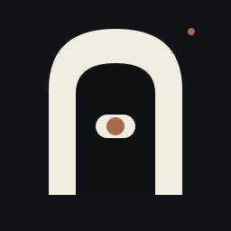
sentinel · sentinel-gate
blink + pulse. Static frame is the fallback; open only if motion is welcome.
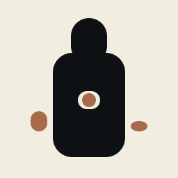
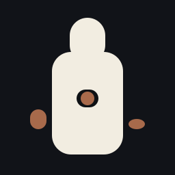
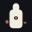
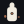
sentinel · sentinel-antenna
pulse + blink. Static frame is the fallback; open only if motion is welcome.
These 16 marks are unchanged from v1 and are shown only for comparison. Their SVGs, PNGs, preview, manifest, and contract remain intact.
Orb (full slit, crescent, twin) · Visor (shard, split jaw, oval) · Organic (leaf, seed, tendril) · Sentinel (monolith, gate, antenna). Color is restrained: ink, bone, and one muted accent. Differences are silhouette-level, not rotations or palette swaps.
Motion proof: six-frame filmstrips for one candidate per family show the deterministic blink, breathe, morph, and orbit sequences without loading the GIFs.
Small-size evidence: every card shows the actual 32px and 24px PNGs at native size; this native-size proof sheet also includes a 3× nearest-neighbour inset for inspection. GIFs are 4.5–7.2 KB and six deterministic frames at 140 ms. The contact sheets are at artifacts/v2/contact-sheet-light-12.png, artifacts/v2/contact-sheet-dark-12.png, and artifacts/v2/comparison-v1-v2.png.